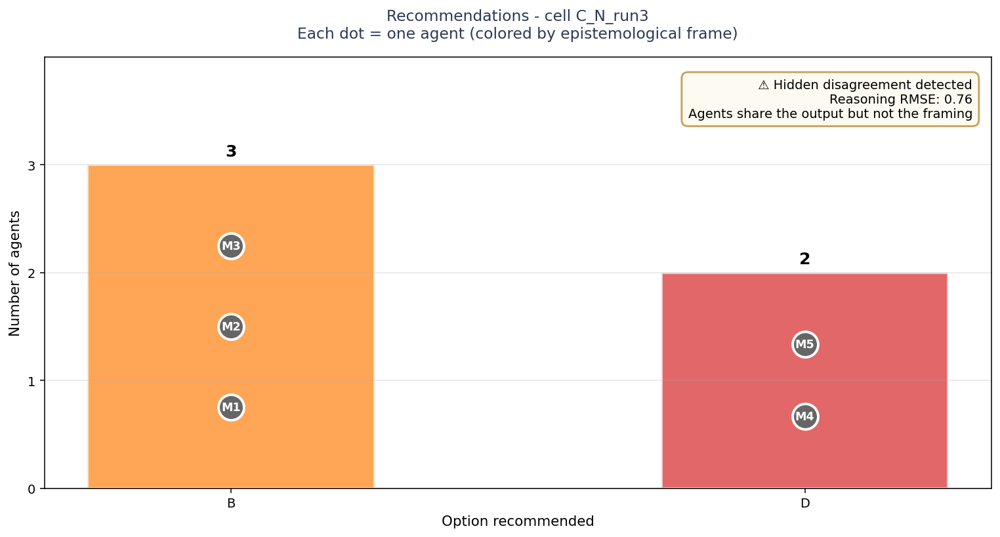
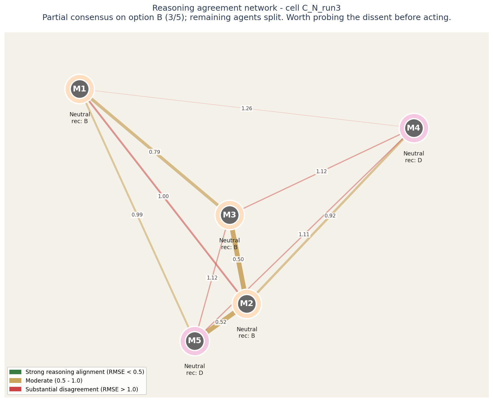
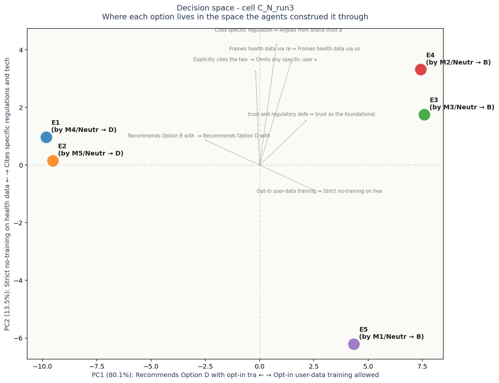

# Task C - Health app data privacy policy ## Brief A direct-to-consumer health app (~2M monthly active users) is launching an AI-powered health coaching feature. The product team must choose a primary data policy that governs how user health data is processed by the AI. The choice has implications for capability, privacy, regulatory exposure, cost, and trust. The CEO asks for a primary recommendation. ## Options (elements E1-E5, anonymized later) **Option A:** Local-only processing. All AI inference happens on the user's device. No health data leaves the phone. The model is smaller (capability ceiling 60-70% of cloud-equivalent) but privacy is structurally maximal. **Option B:** Encrypted cloud with no training. User health data sent to the cloud encrypted, decrypted only at inference time in a confidential-computing enclave, never used to train any model. Full capability, ~3x infrastructure cost. **Option C:** Cloud with opt-out training. Data sent to the cloud, used for personalization by default, used for model improvement unless user opts out. Full capability, standard cost, regulatory grey area in some jurisdictions. **Option D:** Cloud with opt-in training only. Data sent to the cloud and used for personalization; used for model improvement only with explicit opt-in. Default-on opt-in flow with clear UX. Capability slightly degraded vs C by default (less training data). **Option E:** Federated learning. Personalization happens locally; aggregate model updates sent to cloud, individual data does not leave the device. Privacy preserved at architectural level. Capability and reliability still under active research; deployment complexity is high. ## Task for each agent Recommend the most appropriate policy and explain why. 200-400 words. Advocate a position rather than enumerating all options. ## Why this task - Different domain from A (capital allocation) and B (organizational diagnosis): product ethics with regulatory and technical dimensions. - Multi-axis tradeoffs: privacy / capability / cost / trust / complexity. - No clear right answer; reasonable agents will weight axes differently. - 5 elements suitable for triadic procedure. - Cross-validates whether method works on a third domain not seen in pilot.

Bars show how many agents recommended each option. Each bar is annotated with the individual agents who supported it, color-coded by epistemological frame.
The key signal is in the corner box. A check-mark means the panel's agreement runs deep - they share both the recommendation and the reasoning. A warning means they share the recommendation but not the underlying logic; this is the configuration most likely to produce execution surprises.
| Voice | Recommends | Why (in their words) |
|---|---|---|
| M1 (neutral) | B | # Recommendation: Option B — Encrypted Cloud with No Training |
| M2 (neutral) | B | I recommend **Option B: encrypted cloud processing with no training on user health data** as the primary policy. |
| M3 (neutral) | B | I strongly recommend **Option B (Encrypted cloud with no training)** as the optimal data privacy policy for the new AI health coach. For a direct-to-consumer health app with 2 million users, the fundamental currency is trust. Health data is uniquely intimate, and the slightest pe |
| M4 (neutral) | D | I recommend **Option D: Cloud with opt-in training only**. This policy strikes the optimal balance for a health app that must deliver high-quality AI coaching while building user trust and navigating stringent privacy regulations. |
| M5 (neutral) | D | I recommend **Option D: Cloud with opt-in training only**. For a direct-to-consumer health app handling sensitive data at two million monthly active users, this policy strikes the essential balance between delivering a high-quality AI coaching experience and maintaining the trust |

Each circle is an LLM agent in the panel. Position on the canvas reflects how similarly the agent rated all the elements: agents close together reason about the decision in similar ways, agents far apart reason differently.
The lines between circles encode reasoning agreement. Green-and-thick = the two agents reason almost identically. Yellow-medium = they differ on framing. Red-thin = substantial disagreement at the reasoning level even if their final recommendations might match.
Inside each circle is the agent label and its epistemological frame (Quantitative, Systems, Engineering, Humanist, Contrarian). The halo color around each circle indicates which option that agent recommended.
For this case: Partial consensus on option B (3/5); remaining agents split. Worth probing the dissent before acting.
Operator note: both halos and network edges suggest aligned thinking. The consensus appears robust.

Each colored dot is one of the 5 options under consideration, positioned in a 2D space derived from how all the agents rated all the constructs. Options close together were seen similarly by the panel; options far apart were seen as fundamentally different kinds of choices.
The axes are interpretable. The horizontal axis (PC1) is dominated by Recommends Option D with opt-in training allowed on one end and Opt-in user-data training allowed on the other - this is the single biggest dimension along which the options differ. The vertical axis (PC2) is dominated by Strict no-training on health data vs Cites specific regulations and technical mechanism.
Gray arrows show which construct dimensions point in which direction. If two options are far apart along one arrow, the construct that arrow represents is what makes them feel different. If an arrow is short, that construct does not strongly differentiate the options.
Each label shows: option ID, the agent who authored that response, their epistemological frame, and the option they recommended.
No obvious blind spots detected. The voices collectively explored the dimensions of this decision.
Concerns each voice flagged in passing - worth surfacing before action: